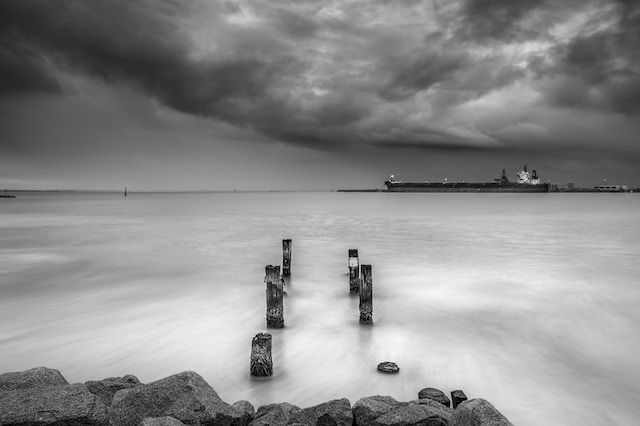

11 tips for better black and white street photography
Black and white street photography has a long history, dating back to the 1930s, when Henri Cartier-Bresson roamed the hidden corners of Paris and Walker Evans and Helen Levitt rode the New York City subway.
In the following decades, even as color photography began to dominate—first in advertising, then in fine art—pioneering street photographers continued to shoot in black and white for its timeless quality and effortless simplicity. Nearly a century later, many still do. In the last five years, Lomography, CatLABS, Fujifilm, and Kosmo Foto all announced new (or revived) black and white films. Without the distraction of color, a moment can be distilled to its essence or core. Whether you’re just starting out with street photography or considering a fresh approach, working in monochrome can teach you to see your surroundings in a new way.
Save in RAW format
This one’s for digital photographers: shooting in RAW format will give you the freedom and flexibility to edit/finesse your shadows and highlights when you convert to black and white in post-production. If you use an electronic viewfinder (mirrorless cameras have these), you can set it to show black-and-white preview images as you’re shooting—but you can still save the RAW color files for later. This approach can be helpful when training yourself to “see” in black and white.
Seek moments of contrast
When you remove color, your work becomes all about light, so look for scenes with plenty of contrast between light and dark (and with gray tones in between). While most photographers avoid the hard sunlight of midday, these conditions can be an asset for artists shooting in black and white. In Japan, Y Uzen used shadows to creative effect when photographing a cat around noon. Try visiting a location during different hours to see how the light—and subsequently, the contrast–changes throughout the day. At the golden hour, the shadows will get softer but also longer. At nighttime, streetlights and illuminated storefronts can create a pool of light, while allowing the rest of the frame to fall into darkness.
Experiment with reflectionst
To add interest to a photograph without color, consider using reflections in your surroundings. This photograph by Benny van den Bulke feels like a modern twist on Henri Cartier-Bresson’s iconic Behind the Gare Saint-Lazare; instead of jumping over a puddle, however, the subject in this picture steps over a toilet leak.
You can also use windows to create double-exposure-like layers within a single frame, à la Vivian Maier, who often photographed her own reflection. While on a boat, for example, the Istanbul-based photographer Emir Bozkurt used reflections to capture the interior and exterior scene at the same time.
Geoffrey Black, on the other hand, used the reflection from a shiny car to incorporate the lines and patterns of a nearby building. In doing so, he created balance and repetition between the foreground and background.